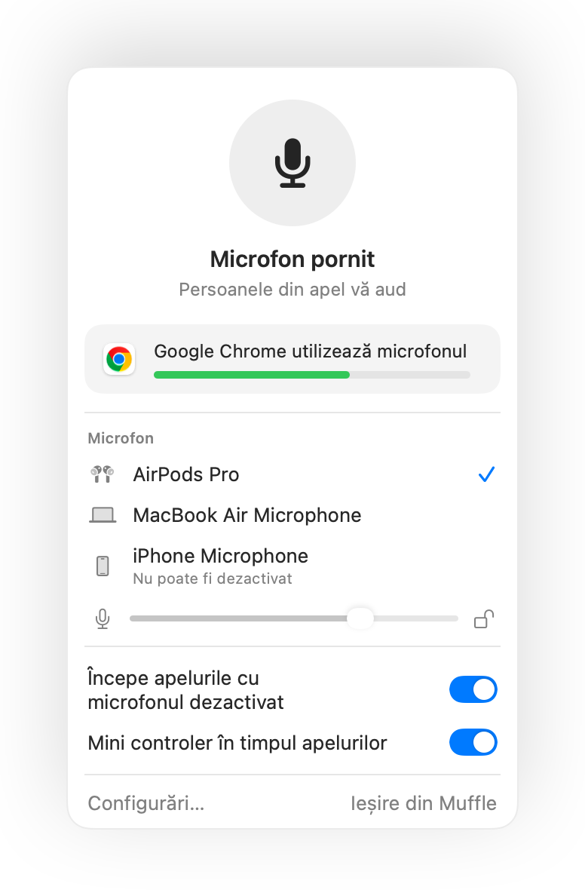
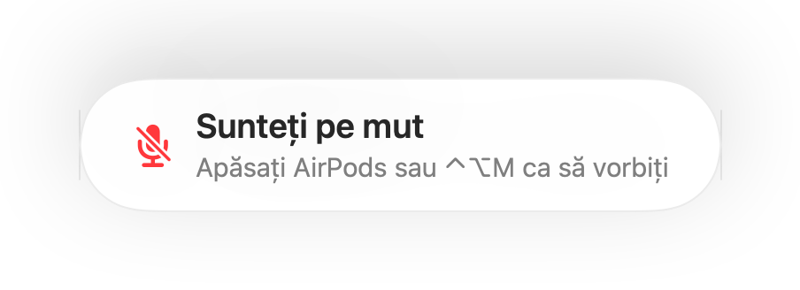
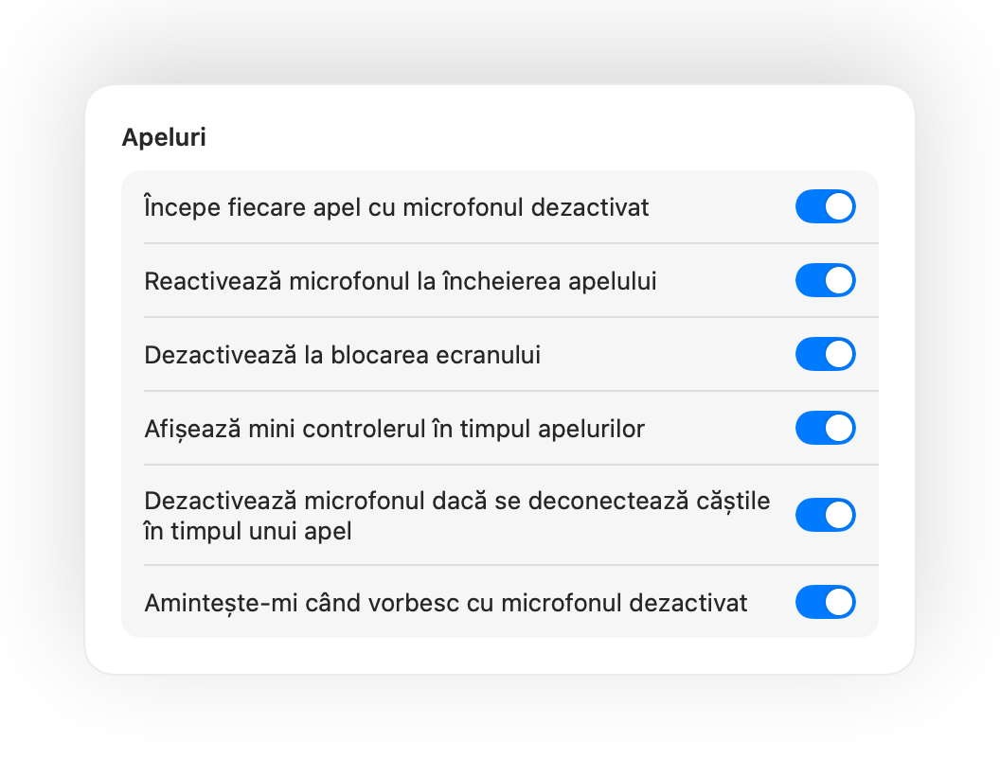

Dezactivați microfonul pe Mac de oriunde.
Apăsați pe AirPods sau o combinație de taste. Muffle oprește chiar microfonul fizic, așa că Google Meet, Zoom, Teams, Slack și orice altă aplicație aud doar liniște.
Gratuit 3 zile. Apoi o singură plată, fără abonament. Pentru macOS 14 Sonoma și versiuni ulterioare.

Funcționează cu orice aplicație care vă utilizează microfonul
- Google Meet
- Zoom
- Microsoft Teams
- Slack
- Discord
- FaceTime
- Webex
- Skype
- SoWork
- Gather
- Chrome
- Safari
- Arc
- Edge
- Firefox
Muffle dezactivează microfonul la nivel hardware, așa că nu contează ce aplicație, browser sau filă îl folosește.
Tot ce ar trebui să facă Mac-ul într-un apel
Apăsați AirPods pentru a dezactiva microfonul
În timpul oricărui apel, apăsați tija o dată pentru a dezactiva microfonul și încă o dată pentru a-l reactiva. Funcționează chiar și în Chrome, unde Google Meet și alte apeluri web ignoră apăsarea pe AirPods.
O singură combinație de taste pentru orice aplicație
Control-Opțiune-M vă pune pe mut peste tot, chiar și când apelul este într-o filă din fundal. Țineți apăsat ca să vorbiți când sunteți pe mut și eliberați pentru a reveni la starea dezactivată.
Un memento „Sunteți pe mut”
Începeți să vorbiți cu microfonul dezactivat și Muffle vă avertizează înainte de a explica întreaga idee de unul singur.
Apeluri pe pilot automat
Începeți fiecare apel cu microfonul dezactivat, reactivați microfonul automat la încheierea apelului și opriți-l la blocarea ecranului Mac-ului.
Știți mereu dacă microfonul este activ
Un buton plutitor discret arată starea microfonului în apeluri. Faceți clic pe el pentru a dezactiva sau reactiva sunetul.
Nivelul microfonului rămâne neschimbat
Chrome, Zoom și Teams modifică nivelul microfonului de la sine. Blocați-l, iar Muffle îl readuce la valoarea dorită.
Siguranță când se descarcă căștile AirPods
Dacă setul de căști se deconectează în mijlocul apelului, Muffle taie sunetul înainte ca apelul să comute pe microfonul Mac-ului și să transmită zgomotul din cameră.
Comenzi rapide și Centrul de control
Dezactivați microfonul din aplicația Comenzi rapide, prin Siri, Stream Deck, Raycast sau cu un buton în Centrul de control.



Configurare într-un minut
- Instalați Muffle din Mac App Store și permiteți accesul la microfon.
- Intrați într-o întâlnire sau conferință în orice aplicație, ca de obicei.
- Apăsați pe AirPods, folosiți Control-Opțiune-M sau faceți clic pe iconița din bara de meniu pentru a dezactiva microfonul.
Gândit pentru confidențialitate
Muffle nu înregistrează, nu stochează și nu trimite niciodată conținut audio. Doar activează sau dezactivează microfonul și citește nivelul volumului. Fără conturi, fără analitice, fără urmărire.
Întrebări frecvente
Funcționează Muffle cu Google Meet în Chrome?
Da. Chrome nu transmite comanda de dezactivare de pe AirPods către apelurile web, așa că Muffle preia comanda și dezactivează chiar microfonul. Același lucru este valabil pentru orice apel dintr-o filă de browser.
Mă vor vedea ceilalți ca fiind pe mut?
Aplicația de apel poate arăta în continuare microfonul pornit, deoarece Muffle oprește microfonul la nivel de sistem și nu butonul din aplicație. Ceilalți aud liniște în ambele cazuri. Iconița Muffle din bara de meniu devine roșie când microfonul este dezactivat.
Ce modele de AirPods sunt compatibile?
AirPods Pro, AirPods 3 și versiunile ulterioare, precum și AirPods Max, plus modelele Beats cu control al apelurilor. Combinația de taste și bara de meniu funcționează cu orice microfon.
Funcționează cu Zoom, Teams, Slack și Discord?
Da. Muffle funcționează cu orice aplicație de pe Mac care folosește microfonul, fie programe desktop, fie apeluri video în browser.
Există un abonament?
Nu. Încercați toate funcțiile gratuit timp de 3 zile, apoi deblocați Muffle printr-o singură achiziție.
De ce are nevoie Muffle de acces la microfon?
macOS transmite apăsarea pe AirPods doar aplicațiilor care utilizează microfonul, așadar Muffle menține o conexiune silențioasă în timpul apelurilor. Nimic nu este înregistrat.
Ce se întâmplă dacă închid Muffle cât timp microfonul este dezactivat?
Muffle reactivează automat microfonul la ieșire, astfel încât să nu rămâneți blocat pe mut.
Ce versiuni de macOS sunt acceptate?
macOS 14 Sonoma și versiunile ulterioare. Butonul pentru Centrul de control necesită macOS 26 sau o versiune ulterioară.
Ghiduri
- Cum dezactivați microfonul în Google Meet cu AirPods pe MacApăsarea pe AirPods nu dezactivează Google Meet în Chrome pe Mac. Aflați cum puneți Meet pe mut din căști, dintr-o tastă sau din bara de meniu.
- Cum dezactivați microfonul în Zoom cu AirPods sau o combinație de taste pe MacPuneți Zoom pe mut pe Mac printr-o apăsare pe AirPods sau o comandă rapidă, chiar dacă fereastra nu este activă. Funcționează în aplicație și în browser.
- Cum dezactivați Microsoft Teams cu AirPods pe MacPuneți Microsoft Teams pe mut pe Mac din căștile AirPods, o comandă rapidă sau bara de meniu. Funcționează în aplicație și în browser.
- Cum dezactivați un apel Slack Huddle din orice aplicație pe MacPuneți apelurile Slack Huddle pe mut din orice aplicație cu o comandă rapidă sau din AirPods. Nu mai căutați fereastra de apel.
- Push to talk și o tastă globală de dezactivare pentru Discord pe MacFolosiți o singură tastă push to talk și dezactivare pentru Discord pe Mac sau din căști AirPods. Funcționează în aplicație și în browser.
- Cum să dezactivați Webex din orice aplicație pe MacDezactivați microfonul în întâlniri Webex pe Mac printr-o tastă globală sau din AirPods, chiar dacă Webex nu este fereastra activă.
Nu mai căutați butonul de microfon.
Puteți încerca Muffle gratuit timp de 3 zile.
În curând în Mac App Store